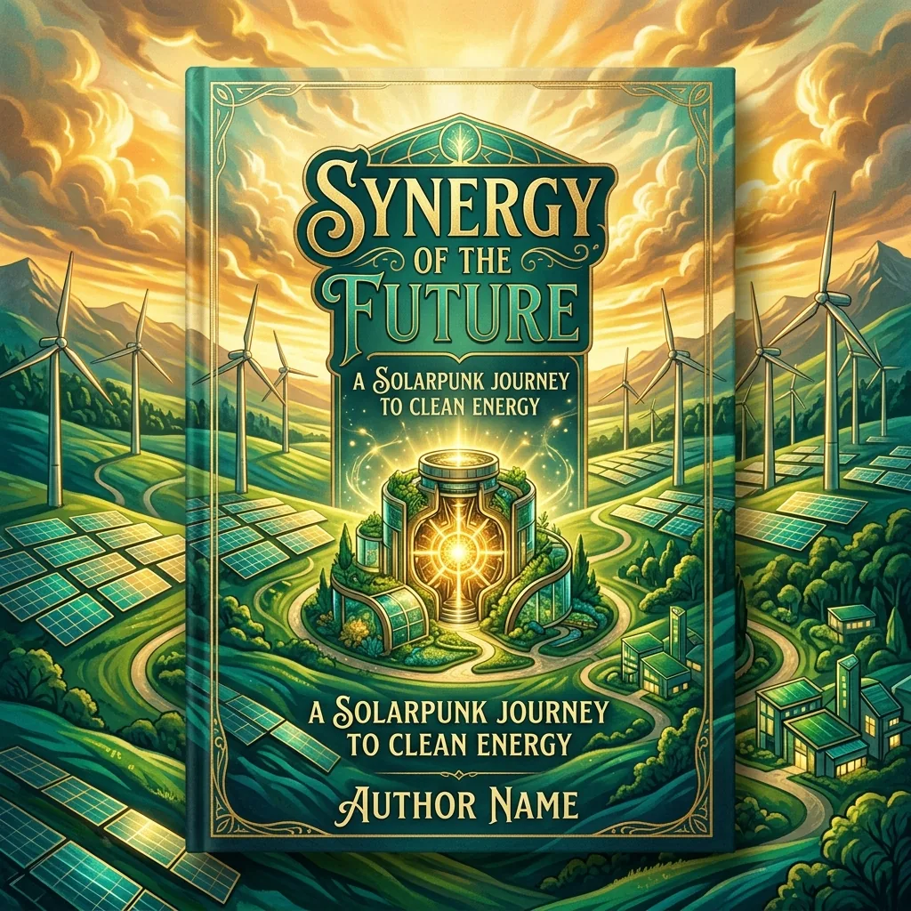

« "Nous ne choisissons pas les questions que l'histoire nous pose. Nous choisissons seulement comment nous y répondons. Et ce choix, fait collectivement ou subi faute de l'avoir fait, définit ce que nous devenons."Elena Vasilieva, notes préparatoires pour son intervention au Parlement européen, octobre 2026 »

Tartu, Estonie. Un appartement au dernier étage d'un immeuble du XIXe siècle. Fin octobre 2026.
Elena Vasilieva a posé ses notes sur la table de la cuisine. Trois semaines se sont écoulées depuis son intervention devant le Parlement européen à Bruxelles. Elle a encore dans les oreilles les questions des parlementaires, certaines précises et exigeantes, d'autres qui révélaient que leur auteur n'avait pas lu le rapport qu'on lui avait remis. C'est toujours ainsi.
Ce qui l'occupe ce soir, c'est une question que personne ne lui a posée lors de cette séance. Elle a parlé de gouvernance de l'IA, de transparence algorithmique, de droits fondamentaux dans les systèmes automatisés. Elle a dit, et elle le répète depuis des années, que la politique est le nouveau code. Que les règles que nous écrivons pour gouverner l'IA sont aussi importantes que les lignes de code qui la font fonctionner.
Mais ce soir elle pense à une question en aval de celle-là. Tout ce qu'elle a dit sur la gouvernance présuppose que l'électricité qui fait tourner ces systèmes soit disponible. Que les métaux qui les composent aient été extraits, traités, assemblés. Que les câbles qui les connectent soient intacts. Que quelqu'un, quelque part, ait pris les décisions nécessaires pour que tout cela soit possible.
Ces décisions ne sont pas techniques. Elles sont politiques. Et elles se prennent en ce moment, ou plutôt elles ne se prennent pas, dans une multitude de forums, de législatures et de conseils d'administration dont les agendas sont dominés par l'urgence du trimestre et non pas par la nécessité de la décennie.
Elena prend un stylo et commence à écrire. Non pas pour Bruxelles, cette fois. Pour elle-même. Pour clarifier ce qu'elle pense vraiment.
Ce que sept chapitres nous ont appris
Avant de formuler des choix, il est utile de faire le point sur ce que ce voyage à travers l'économie énergétique de l'intelligence artificielle nous a enseigné. Non pas pour récapituler (le lecteur qui a parcouru ces pages n'a pas besoin d'un résumé), mais pour identifier les vérités qui résistent quand on les soumet au tamis de la nuance.
Les certitudes durables
La première certitude est que la révolution de l'intelligence artificielle est une révolution industrielle, pas une révolution intellectuelle. Elle a des usines, des data centers. Elle a ses matières premières, les métaux critiques, les minéraux de l'électronique. Elle a ses déchets, les équipements en fin de vie, la chaleur dissipée, l'eau évaporée. Elle transforme le monde physique avec la même brutalité que la vapeur a transformé l'Angleterre du XIXe siècle. Ignorer cette matérialité n'efface pas ses conséquences.
La deuxième certitude est que les murs physiques que ce livre a identifiés sont réels et immédiats pour certains d'entre eux. Le goulot des semiconducteurs avancés ne se résoudra pas avant la fin des années 2020 au mieux. Les files d'attente de raccordement électrique en Europe et aux États-Unis se comptent en années, pas en mois. La dépendance aux métaux critiques dont l'extraction est concentrée dans quelques pays géopolitiquement sensibles ne se diversifie pas en un cycle électoral. Ces contraintes ne sont pas des projections pessimistes. Elles sont documentées, chiffrées, et visibles pour quiconque prend la peine de regarder.
La troisième certitude est que les réponses technologiques existent, progressent, et qu'elles sont suffisamment prometteuses pour justifier un optimisme raisonné. L'efficacité algorithmique s'améliore à un rythme impressionnant. Les nouvelles architectures de puces offrent des sauts de performance-par-watt spectaculaires. Le stockage d'énergie se diversifie et ses coûts baissent. La fusion nucléaire n'est plus un horizon perpétuellement lointain mais un pari dont des acteurs sérieux parient les milliards. Ces progrès ne suffisent pas à eux seuls, mais ils donnent du temps et montrent que la trajectoire n'est pas une fatalité.
La quatrième certitude est que le paradoxe de Jevons traverse tout. Chaque gain d'efficacité rend l'IA moins chère, ce qui stimule de nouveaux usages, ce qui consomme davantage. Ce paradoxe n'est pas une fatalité non plus, mais il ne se résout pas par la technologie seule. Il se résout par la politique, par la régulation, par la culture collective autour des usages. Par des choix.
Les incertitudes que l'honnêteté oblige à nommer
Il y a des choses que ce livre ne sait pas, et que personne ne sait vraiment. La trajectoire exacte de la demande énergétique de l'IA d'ici 2030 dépend de décisions qui ne sont pas encore prises. Si une AGI fonctionnelle est développée dans les cinq prochaines années, tout ce que nous avons projeté est obsolète. Si la fusion commerciale arrive en 2030, la contrainte énergétique change de nature. Si une crise géopolitique majeure en mer de Chine perturbe l'approvisionnement en semiconducteurs, le rythme du déploiement de l'IA ralentit brutalement.
L'honnêteté intellectuelle exige de reconnaître que ce livre, comme tout livre sur un sujet en mouvement aussi rapide, sera partiellement obsolète dans trois ans. Ce n'est pas une raison de ne pas l'écrire. C'est une raison de le lire avec le grain de sel approprié et de continuer à suivre l'évolution des faits.
La sobriété numérique : proportionnalité, pas ascétisme
Le terme sobriété numérique est souvent perçu, surtout par ceux qui travaillent dans le secteur technologique, comme une menace camouflée. Comme si parler de sobriété signifiait abandonner les bénéfices de la technologie, revenir à des pratiques artisanales, refuser le progrès. Cette perception est un contresens.
La sobriété, en thermodynamique, c'est l'efficacité maximale dans l'utilisation d'une ressource. Ce n'est pas la privation. C'est le refus du gaspillage. Ces deux choses sont très différentes, et confondre les deux revient à se donner une bonne raison de ne rien changer.
La hiérarchie des usages
La question qui se pose concrètement est celle de la proportionnalité entre l'énergie consommée par un usage de l'IA et la valeur sociale, médicale, économique ou cognitive qu'il produit.
Un système d'IA qui analyse des images médicales et détecte des cancers du poumon avec une précision supérieure aux radiologues humains, au bénéfice de patients dans des régions sans radiologue disponible : quel que soit son coût en électricité, il y a peu de gens prêts à argumenter sérieusement que ce n'est pas un usage légitime de cette énergie.
Un modèle d'IA qui génère des milliers d'images de stock pour illustrer des articles marketing, consommant la même électricité par image générée, en remplacement d'illustrations qui auraient pu être achetées à des artistes humains pour un coût économique comparable : la question de la proportionnalité est plus discutable.
Entre ces deux extrêmes, un spectre continu d'usages dont la valeur sociale varie énormément et dont la consommation énergétique est souvent similaire. Il serait irréaliste de vouloir réglementer chaque usage de l'IA de manière granulaire. Mais il est tout à fait raisonnable d'exiger que les outils de mesure existent, que la transparence sur la consommation soit la norme, et que les signaux prix reflètent les coûts réels, énergie, eau, métaux critiques, pour guider les décisions d'investissement et d'usage vers les applications les plus justifiées.
Ce que la sobriété n'est pas
La sobriété numérique n'est pas le refus des grands modèles de langage ou de la génération d'images ou de la voix artificielle. Ces outils ont des usages qui justifient leur existence. La sobriété, c'est l'exigence que ces outils soient utilisés avec conscience de leur coût, dans des contextes où ce coût est justifié par la valeur produite.
La sobriété n'est pas non plus un projet nostalgique. Retourner à l'ère pré-numérique n'est ni possible ni désirable. Ce que la sobriété demande, c'est d'éviter de déployer des capacités de calcul massives pour des tâches qui ne les justifient pas, de ne pas allumer des centres de données entiers la nuit pour entraîner des modèles dont les usages prévus sont triviaux, de faire durer les équipements plus longtemps quand c'est techniquement possible, de choisir des services plus efficaces quand la qualité est équivalente.
En d'autres termes, la sobriété numérique c'est l'application au numérique du même principe d'ingénierie que celui qu'un bon ingénieur applique à n'importe quel système : ne pas sur-dimensionner, ne pas gaspiller, choisir la solution la mieux adaptée au problème réel.
La sobriété n'est pas l'ennemie de l'innovation. Elle en est souvent le moteur. Les contraintes énergétiques qui ont forcé les constructeurs d'automobiles à concevoir des moteurs plus efficaces ont produit des innovations qui ont bénéficié à l'ensemble de l'industrie. Les contraintes qui forcent les éditeurs de modèles d'IA à optimiser leur efficacité énergétique produisent des algorithmes meilleurs pour tout le monde.
La régulation internationale : nécessaire, difficile, urgente
La sobriété individuelle et organisationnelle est une condition nécessaire mais pas suffisante. Les comportements individuels, même s'ils sont vertueux, ne peuvent pas compenser l'absence de cadres collectifs qui alignent les incitations de l'ensemble des acteurs.
La régulation du numérique et de l'énergie est aujourd'hui principalement nationale ou au mieux européenne. Elle fait face à un objet qui est fondamentalement mondial. Un modèle d'IA est entraîné dans des serveurs répartis sur plusieurs continents, déployé via des plateformes cloud mondiales, utilisé par des milliards de personnes dans tous les pays. La consommation énergétique associée ne respecte pas les frontières des États-nations.
Pourquoi une régulation nationale seule ne suffit pas
Si la France ou l'Union européenne impose des standards exigeants de reporting énergétique et des limites d'émissions aux data centers sur leur territoire, les opérateurs peuvent simplement transférer leurs activités les plus gourmandes en énergie dans des pays sans ces contraintes. La désindustrialisation du numérique vert n'est pas une métaphore : c'est un risque documenté dans tous les domaines où la régulation est asymétrique.
La solution n'est pas de renoncer à la régulation européenne sous prétexte qu'elle sera contournée. L'Union européenne a montré avec le RGPD qu'une réglementation suffisamment exigeante, appliquée à un marché suffisamment important, oblige les acteurs mondiaux à s'y conformer ou à y renoncer, et qu'ils choisissent presque toujours la conformité. Le même principe peut s'appliquer à la dimension énergétique.
Mais cela ne suffit pas non plus à régler les émissions de data centers situés hors d'Europe qui servent des utilisateurs européens. Une taxe sur les émissions carbone des services numériques consommés en Europe, calculée sur la base du mix énergétique du pays d'hébergement et de la consommation estimée du service, serait un mécanisme d'ajustement aux frontières analogue au CBAM (Carbon Border Adjustment Mechanism) que l'Union européenne applique déjà aux importations industrielles. Ce n'est pas une idée marginale : plusieurs groupes de recherche et certains parlementaires européens l'explorent activement.
Les modèles de coordination internationale existants
La recherche d'un cadre international de régulation du numérique n'a pas à partir de zéro. Il existe des précédents dont les architectures peuvent inspirer des adaptations.
Le schéma CORSIA (Carbon Offsetting and Reduction Scheme for International Aviation) impose depuis 2021 aux compagnies aériennes de compenser les émissions de leurs vols internationaux au-delà d'un niveau de référence. Le mécanisme est imparfait, les crédits de compensation sont de qualité variable, et la couverture n'est pas universelle. Mais il existe, il crée des incitations, et il constitue un précédent de coordination internationale sur les émissions d'un secteur mondial.
Le secteur maritime a adopté en 2023 une stratégie de l'Organisation Maritime Internationale visant la neutralité carbone d'ici 2050, avec des étapes intermédiaires contraignantes. La négociation a été longue et les engagements initiaux insuffisants, mais un cadre global existe.
Le numérique est plus difficile à régler que l'aviation ou le maritime, parce que ses infrastructures sont plus diffuses, ses acteurs plus nombreux et ses flux moins traçables. Mais les principes sont les mêmes : identification des émissions, attribution aux responsables, mécanisme de tarification ou de plafonnement, vérification indépendante. Les obstacles sont politiques et économiques, pas techniques.
La tension Nord-Sud dans la régulation du numérique
Il y a une tension profonde dans toute discussion sur la régulation internationale du numérique qui mérite d'être nommée directement : la tension entre les pays qui ont déjà déployé massivement ces infrastructures et les pays qui aspirent à les déployer pour leur propre développement.
Les pays du Sud global, l'Afrique, l'Asie du Sud-Est, l'Amérique latine, ont une relation très différente au numérique que les pays occidentaux. Pour beaucoup d'entre eux, le déploiement de l'IA et des infrastructures numériques n'est pas un luxe à rationner mais un levier de développement économique, d'accès aux services de santé et d'éducation, de réduction des inégalités. Leur dire de limiter leur déploiement au nom d'une empreinte carbone globale est une position moralement intenable si elle n'est pas accompagnée d'un transfert de technologies propres et de financements adéquats.
C'est exactement la même tension que celle qui structure les négociations climatiques depuis la COP de Kyoto : les pays développés ont brûlé du charbon pendant deux siècles pour se développer, et ils demandent maintenant aux pays en développement de choisir des voies plus propres, sans toujours proposer les moyens de le faire. La légitimité de cette demande, même si elle est justifiée sur le fond, est constamment sapée par cette asymétrie historique.
Une régulation internationale du numérique qui ne résout pas cette tension sera inefficace ou injuste, probablement les deux. Elle ne peut pas l'éviter.
L'éthique de l'allocation énergétique : qui décide, et comment
La question de savoir qui décide quels usages de l'IA méritent quelle quantité d'énergie est une question politique fondamentale. Elle ne peut pas être résolue par le marché seul, parce que le marché ne valorise pas l'ensemble des dimensions pertinentes. Elle ne peut pas être résolue par des experts seuls, parce que la définition de la valeur sociale est une question démocratique, pas technique. Elle ne peut pas être résolue par des individus seuls, parce que les effets sont systémiques.
Ce que la tarification du carbone peut et ne peut pas faire
La tarification du carbone, qu'elle prenne la forme d'une taxe ou d'un système de quotas échangeables, est l'instrument économique le plus souvent recommandé pour internaliser les coûts environnementaux dans les décisions économiques. Son principe est solide : si l'électricité au charbon coûtait ce qu'elle coûte vraiment, y compris ses externalités environnementales, les acteurs économiques ont une incitation à préférer l'électricité renouvelable ou nucléaire.
Le système européen d'échange de quotas d'émissions (ÉTS) fonctionne, avec des imperfections connues et en cours de correction. L'extension de ce système au secteur numérique, qui en était largement exempté jusqu'à récemment, est en discussion. Une telle extension changerait les calculs économiques des opérateurs de data centers de manière significative.
Mais la tarification du carbone a des limites que ses partisans les plus enthousiastes reconnaissent parfois insuffisamment. Elle ne distingue pas entre les usages de l'IA selon leur valeur sociale. Elle traite de la même manière le kilowattheure consommé pour détecter un cancer et celui consommé pour générer du contenu publicitaire personnalisé. Elle n'adresse pas les questions de justice distributive, qui paie le prix de la transition, qui en bénéficie. Et elle peut être politiquement fragile, comme l'a montré la crise des Gilets Jaunes en France, déclenchée en partie par une hausse de la taxe carbone sur les carburants qui touchait proportionnellement plus les ménages à faibles revenus des zones rurales.
La gouvernance démocratique des usages de l'IA
Il y a un principe de gouvernance que je veux défendre explicitement, parce qu'il est souvent absent des débats techniques sur l'IA : les décisions sur les usages prioritaires de l'IA, et donc sur l'allocation de l'énergie qu'ils requièrent, doivent être prises par des processus démocratiques légitimes, pas par les seules entreprises qui développent ces technologies ou les seuls experts qui les étudient.
Cela ne veut pas dire que chaque décision d'investissement dans un système d'IA doit être soumise à un référendum. Les démocraties modernes fonctionnent par représentation, délégation et régulation : les citoyens délèguent à des représentants le soin d'établir les règles, et les entreprises opèrent dans le cadre de ces règles. Le problème actuel est que les règles qui encadrent les usages énergétiques de l'IA sont insuffisantes, tardives et souvent contournables.
Ce que la gouvernance démocratique peut produire, concrètement, c'est une hiérarchie explicite des usages prioritaires. Des processus de consultation publique sur les grands projets d'infrastructure numérique, analogues aux enquêtes publiques sur les grands projets d'infrastructure énergétique. Des mécanismes de représentation des impacts dans les territoires affectés, les riverains d'un data center qui consomme l'eau d'un aquifère régional ont un droit à être entendus. Et des mécanismes d'évaluation et de révision réguliers, parce que les technologies et leurs impacts évoluent rapidement.
La question intergénérationnelle
Il y a une dimension de l'éthique de l'allocation énergétique que les processus démocratiques ordinaires gèrent mal : la question des générations futures. Les décisions que nous prenons aujourd'hui sur l'extraction des métaux critiques, sur l'utilisation des ressources en eau, sur les émissions de CO2, auront des conséquences pour des personnes qui ne votent pas encore parce qu'elles ne sont pas encore nées.
Cette considération n'est pas nouvelle dans la philosophie politique : John Rawls et d'autres ont théorisé les obligations envers les générations futures. Elle est cependant particulièrement aiguë dans le contexte de la transition numérique-énergétique, parce que les rythmes sont très asymétriques. Les bénéfices de l'IA se matérialisent en mois ou en années. Les conséquences de l'extraction minière excessive ou du réchauffement climatique excessif se matérialisent en décennies et en siècles.
Les principes qui permettraient de mieux prendre en compte cette asymétrie existent : le principe de précaution pour les technologies dont les impacts à long terme sont mal connus, le principe de réversibilité qui préfère les décisions qui préservent des options futures à celles qui les ferment, le principe d'équité intergénérationnelle qui exige que les générations présentes ne consomment pas irréversiblement des ressources dont les générations futures ont besoin. Ces principes sont plus faciles à énoncer qu'à appliquer dans des systèmes politiques qui fonctionnent sur des cycles de quelques années.
Les quatre choix collectifs urgents
Je vais formuler maintenant ce que ce livre, après sept chapitres de cartographie et d'analyse, permet d'identifier comme des choix collectifs qui méritent d'être faits délibérément plutôt que subis par défaut. Ces choix ne sont pas des solutions techniques. Ce sont des orientations politiques qui définissent le cadre dans lequel les solutions techniques peuvent se déployer.
Ils font écho aux quatre piliers formulés dans le premier volume de cette collection : transparence radicale, distribution du pouvoir, révolution éducative, gouvernance agile. Mais ils les déclinent sur le terrain de l'énergie et de la matérialité de l'intelligence artificielle.
Choix 1 Mesurer et rendre visible
Aucun progrès sérieux n'est possible sans mesure. L'empreinte énergétique et carbone des services numériques doit être rendue obligatoirement visible, avec des méthodologies standardisées, sur les trois scopes, vérifiées par des auditeurs indépendants accrédités. Pas une déclaration volontaire. Une obligation réglementaire avec des sanctions crédibles en cas de fausse déclaration. Cette transparence doit s'appliquer aussi bien aux grands hyperscalers qu'aux startups déployant des services en cloud. Elle est la condition de possibilité de tous les autres choix.
Choix 2 Tarifer le vrai coût
L'extension du système européen d'échange de quotas d'émissions au secteur numérique est techniquement et juridiquement possible. Elle doit s'accompagner d'une tarification de l'eau utilisée pour le refroidissement des data centers dans les régions en stress hydrique, et de mécanismes d'ajustement aux frontières pour éviter les fuites de carbone vers des juridictions moins régulées. Ces instruments ne doivent pas être conçus pour taxer la technologie mais pour faire payer ses coûts réels, permettant aux usages à haute valeur sociale de continuer à se développer et aux usages peu justifiés de voir leur coût refléter leur impact.
Choix 3 Investir dans l'infrastructure de l'abondance bas-carbone
Le nucléaire et les renouvelables ne sont pas adversaires dans ce choix. Ils sont complémentaires et tous deux nécessaires. Un programme européen d'investissement massif dans la capacité de production et de transport d'électricité bas-carbone, des câbles de transmission longue distance aux SMR en passant par les batteries de réseau et les interconnexions transfrontalières, est la condition énergétique de la souveraineté numérique européenne. Cet investissement ne peut pas être entièrement privé : les infrastructures de réseau sont des biens publics dont les horizons de retour sur investissement dépassent les cycles de financement privé ordinaires. Il requiert une planification à long terme que seuls les États et l'Union européenne peuvent fournir.
Choix 4 Former la génération qui gérera cette transition
La formation aux technologies énergétiques et numériques n'est pas seulement un enjeu de compétitivité économique. C'est un enjeu civique. Des citoyens capables de comprendre les enjeux énergétiques de l'IA sont des citoyens capables de participer de manière éclairée aux décisions collectives qui les concernent. Cela implique une refonte des formations d'ingénieurs pour intégrer systématiquement la dimension énergétique dans la conception des systèmes informatiques. Cela implique une formation continue des actifs dont les métiers sont transformés. Et cela implique une initiation aux concepts fondamentaux de l'informatique et de l'énergie dès l'école primaire, pas comme un cours à part mais comme une dimension transversale de la culture générale.
La singularité et la thermodynamique de l'information
Ce livre s'est délibérément tenu dans le registre du possible et du probable. Il a évité les scénarios de rupture radicale qui relèvent plus de la prospective spéculative que de l'analyse rigoureuse. Mais il serait intellectuellement incomplet de ne pas aborder, dans ce chapitre final, l'horizon le plus incertain et le plus conséquent de tous : la possibilité d'une intelligence artificielle générale, et ses implications énergétiques.
Ce que l'AGI changerait aux équations de ce livre
Le terme AGI, artificial general intelligence, désigne un système capable de performer de manière comparable aux humains sur l'ensemble des tâches cognitives générales, pas seulement sur des tâches spécifiques. C'est une définition qui cache des débats profonds sur ce que signifie vraiment l'intelligence générale, mais pour les fins de cette discussion, ce qui compte est l'implication pratique : un système AGI en fonctionnement continu, appliqué à la résolution de problèmes complexes dans des domaines multiples simultanément, consommerait des quantités d'énergie que les projections actuelles ne modélisent pas.
Si une AGI était effectivement déployée et chargée d'optimiser la gestion du réseau électrique mondial, de planifier la transition énergétique, de concevoir les matériaux de la prochaine génération de puces, de découvrir de nouveaux traitements médicaux, elle pourrait générer des gains de productivité et des solutions à des problèmes que l'humanité peine à résoudre. Elle consommerait probablement, pour ce faire, des quantités d'électricité qui se mesureraient en terawattheures par an.
La question énergétique de l'AGI est donc potentiellement autoréférence : pour qu'un système AGI puisse aider à résoudre la crise énergétique, il faudrait d'abord résoudre suffisamment la crise énergétique pour l'alimenter. Ce n'est pas un argument contre la recherche sur l'AGI. C'est une raison supplémentaire pour traiter les questions énergétiques de l'IA actuelle comme une priorité, pas comme un problème à régler plus tard.
Les limites physiques de la pensée
Il y a une beauté dans le fait que la question de l'efficacité énergétique du calcul trouve ses limites dans les lois les plus fondamentales de la physique. En 1961, Rolf Landauer, un physicien d'IBM, a formulé ce qui est devenu le principe de Landauer : effacer un bit d'information dans un système à une température T requiert une énergie minimale égale à kT ln(2), où k est la constante de Boltzmann. À température ambiante, cela représente environ 3 attojoules par opération d'effacement.
Les processeurs actuels consomment environ dix millions de fois plus d'énergie par opération logique que cette limite thermodynamique. La limite de Landauer est un horizon théorique très lointain, que les technologies actuelles n'approchent pas. Mais elle signifie quelque chose d'important : il existe une frontière physique absolue à l'efficacité du calcul. On ne peut pas penser sans consommer d'énergie. La question n'est pas si le calcul coûte de l'énergie, mais combien.
Les projets les plus ambitieux de l'histoire de la technologie, qu'il s'agisse de la sphère de Dyson (une mégastructure hypothétique qui capturerait l'intégralité de l'énergie d'une étoile) ou de l'ordinateur quantique universel, se heurtent tous, à des horizons différents, à des limites thermodynamiques que la physique impose sans négociation. L'intelligence, mécanique ou biologique, a un coût énergétique irréductible.
Le cercle vertueux qui mérite d'être tenté
Il y a un scénario que les chapitres précédents ont mentionné de manière fragmentaire et qu'il vaut la peine d'assembler explicitement en conclusion. L'IA accélère la recherche en physique des matériaux, en chimie, en biologie moléculaire. Cette accélération inclut la recherche sur la fusion nucléaire, sur les nouveaux matériaux de stockage d'énergie, sur les architectures de calcul ultra-efficaces. Si ces recherches aboutissent, elles pourraient fournir les ressources énergétiques et les outils computationnels nécessaires pour alimenter une IA encore plus puissante, qui accélérerait encore davantage la recherche.
Ce cercle vertueux n'est pas garanti. Il pourrait aussi produire un cercle vicieux si les ressources énergétiques ne suivent pas le rythme de la demande de calcul. Il pourrait produire des applications dont les bénéfices restent concentrés dans quelques mains si la gouvernance n'est pas au rendez-vous. Il pourrait générer des risques de sécurité que la recherche sur l'alignement des IA n'aura pas su anticiper.
Mais ce cercle vertueux est possible. Et c'est cette possibilité qui justifie l'investissement, l'effort, la vigilance, et la mise en place des garde-fous politiques, économiques et éthiques qui permettraient de le rendre probable plutôt que seulement possible.
Retour à Mesa, Arizona. 3 heures du matin.
C'est par cette scène que ce livre a commencé. Ce pôle de centres de données géant s'étendant dans la banlieue de Phoenix, consommant des centaines de mégawatts d'électricité, traitant des millions de requêtes par jour et exigeant des millions de litres d'eau par jour pour refroidir ses installations (à moins d'adopter des technologies sans eau en circuit fermé). La nuit du désert autour, les étoiles au-dessus, et dans les salles climatisées, les serveurs qui traitent en silence les questions de millions de personnes endormies de l'autre côté de la planète.
Ce pôle industriel n'est pas un symbole de démesure. Il n'est pas non plus un symbole de progrès inévitablement bénéfique. Il est le miroir de nos choix collectifs, faits et non faits.
Sa taille résulte de décisions d'investissement prises par des entreprises qui répondaient à une demande réelle, avec des capitaux dont la disponibilité reflète les priorités de l'économie mondiale actuelle. Son impact environnemental dépend des règles qui encadrent ses émissions et sa consommation de ressources. Sa localisation dans le désert de l'Arizona résulte de choix de politique fiscale locale rendant ce territoire attractif, malgré des tensions hydriques et électriques qui forcent aujourd'hui les opérateurs à envisager le couplage direct avec de futurs réacteurs SMR ou le redémarrage de centrales nucléaires à l'arrêt.
Si des règles différentes avaient été en vigueur, le développement se serait fait sous d'autres contraintes : avec une efficacité maximale dès l'origine, une eau préservée et une alimentation bas-carbone intégrée d'office. Ces choix n'auraient pas été plus coûteux techniquement à long terme. Ils auraient simplement exigé de planifier plutôt que de réagir dans l'urgence. C'est toute la différence.
Elena Vasilieva a écrit, dans ses notes de ce soir d'octobre à Tartu, une phrase que je vais emprunter pour conclure ce livre, parce qu'elle dit avec la précision des meilleurs esprits ce que sept chapitres ont tenté de démontrer.
Dans le premier volume, j'ai dit que la politique est le nouveau code. Ce volume ajoute une couche en dessous. L'énergie est le nouveau territoire. Qui la produit, qui la distribue, qui décide de ses usages, à quel prix et pour quels bénéficiaires : voilà les questions politiques fondamentales de cette décennie. Et comme pour l'IA elle-même, le futur énergétique de l'intelligence ne sera pas ce que la technologie impose. Il sera ce que nous choisirons d'en faire.
Ce choix est difficile parce qu'il est collectif dans un monde qui encourage les décisions individuelles. Il est difficile parce qu'il engage des horizons de temps longs dans des systèmes politiques qui privilégient le court terme. Il est difficile parce qu'il requiert une coordination internationale dans un monde fragmenté par des tensions géopolitiques croissantes.
Il n'est pas impossible. L'humanité a résolu des problèmes collectifs de cette ampleur. Pas toujours bien, pas toujours à temps, mais elle les a résolus. L'élimination de la variole. La reconstruction de l'après-guerre. La prévention de la destruction totale des pêcheries de l'Atlantique Nord par des accords de gestion des quotas. Le protocole de Montréal sur les substances qui appauvrissent la couche d'ozone. Ces exemples ne sont pas des modèles parfaits. Ils sont des preuves de capacité.
La question de l'énergie de l'intelligence artificielle est l'une des questions définitoires de notre époque. Nous ne pourrons pas dire que nous ne savions pas. Les données sont disponibles, les projections sont publiées, les tensions sont visibles. Ce que nous pourrons dire, dans dix ans, c'est ce que nous avons fait, ou ce que nous n'avons pas fait, avec ce que nous savions.
La réponse à cette question dépend de chacun, et de tous ensemble.
Note de l'auteur
Ce livre est le second volume d'une collection qui explore les implications profondes de la révolution de l'intelligence artificielle sur nos sociétés, nos économies et notre relation au monde physique. Le premier volume, L'Odyssée de l'IA, examinait les trajectoires possibles de l'IA elle-même, à travers les destins fictifs de Marc à Lyon, Wanjiru à Nairobi et Elena Vasilieva à Bruxelles, et formulait quatre principes pour une gouvernance de l'IA à la hauteur des enjeux : transparence radicale, distribution du pouvoir, révolution éducative, gouvernance agile.
Ce second volume a voulu descendre d'un étage, des questions de gouvernance aux questions physiques qui les conditionnent. Pas de gouvernance de l'IA sans électricité pour la faire tourner. Pas de transition énergétique intelligente sans les outils numériques pour l'optimiser. Ces deux niveaux sont inséparables, et la collection essaie de les tenir ensemble.
Les chiffres et les faits cités dans ce livre ont été vérifiés jusqu'en novembre 2026 ; certaines estimations datent de février 2026 et sont signalées comme telles. Dans un domaine qui évolue aussi rapidement, certains seront dépassés d'ici la publication. J'ai choisi la précision sur la durabilité, en indiquant systématiquement les sources ou la nature des estimations, de façon à ce que le lecteur puisse évaluer la fragilité de chaque donnée.
Ce travail a bénéficié de nombreuses conversations avec des ingénieurs, des chercheurs, des décideurs et des citoyens ordinaires qui réfléchissent à ces questions avec sérieux. Il porte aussi les traces d'une collaboration avec des outils d'intelligence artificielle utilisés comme assistants de recherche et de rédaction. Cette collaboration est elle-même une illustration des tensions que le livre décrit : ces outils sont utiles, ils ont un coût énergétique, et ils posent des questions sur la nature de la création intellectuelle que je n'ai pas toutes les réponses.
Geoffroy
Novembre 2026
Fin du Volume II
L'Odyssée de l'énergie
Le carburant invisible de l'intelligence artificielle